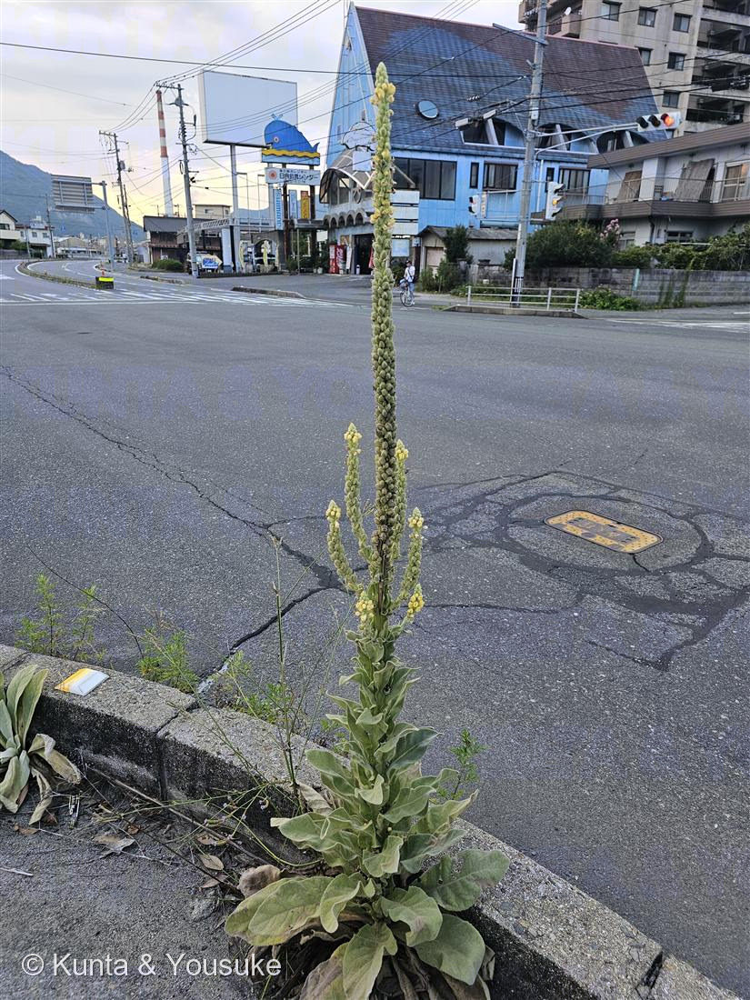
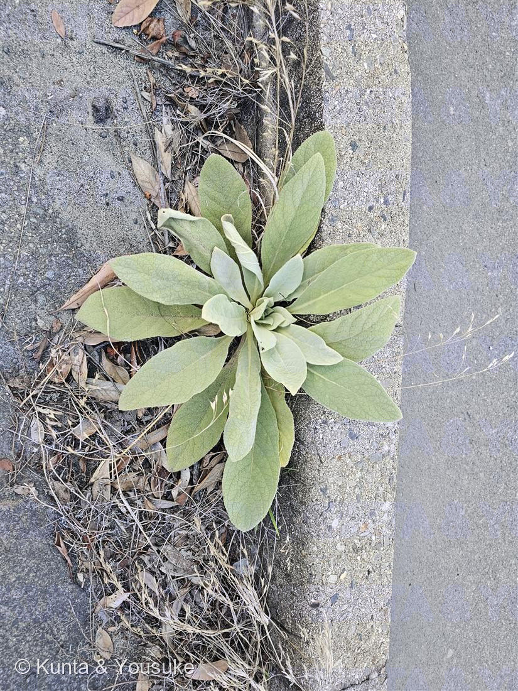
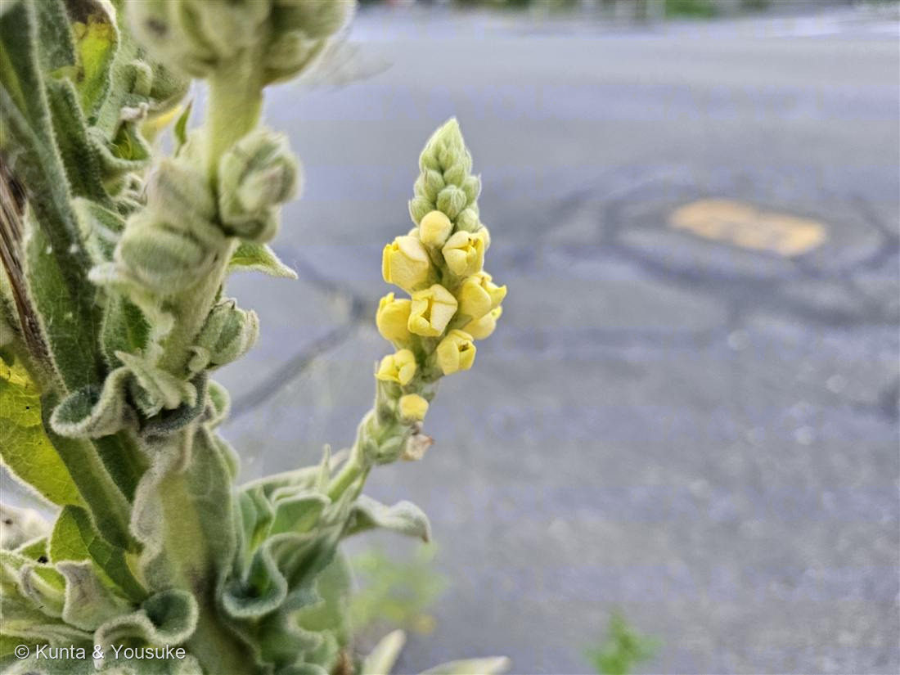

地図を読み込んでいるよ…
🔍 写真も地図も、押しているあいだ拡大して見られるよ（スマホは指を置いてすこし待ってね）。
🌍 の地図＝この子がもともと自生している場所を緑に。ヨーロッパ〜北アフリカ〜西アジア（地中海沿岸が起源）。日本へは明治時代に渡来し、北海道や本州日本海側など、やや涼しい地方の道ばた・空き地・車道ぎわに帰化。
⭐ヨーロッパ〜北アフリカ〜西アジアが原産（地中海沿岸が起源）。⚠日本は塗っていない——ビロードモウズイカは明治時代に渡来した帰化植物で、日本はふるさとじゃない。⭐でも日本では北海道や本州日本海側など、涼しめの地方に多い——燻太さんの「寒い地方？」の勘が半分あたる理由がここ（もとが温帯の子）。⚠毛（ビロード）は寒さよけだけでなく、強い日ざし・乾燥よけでもあるので、暑い車道ぎわでも平気だよ。
⚠ 地図は国（日本と中国だけ県・省）までしか塗れないから、ほんとうの分布より広く見えていることがあるよ。地図はだいたいの場所。正確なところは、上の文を見てね。
ビロードモウズイカ（天鵞絨毛蕊花）
Verbascum thapsus
別名 · マレイン（ハーブ名）／英名 torches・Aaron's rod／ 原産 · ヨーロッパ〜西アジア（帰化）／ 花期 · 7〜9月（2年目）／ ⭐全身ビロードの毛／高さ2m超
ゴマノハグサ科 · Scrophulariaceae（モウズイカ属 Verbascum）── 図鑑で初めてのゴマノハグサ科
燻太さんの見立て「こんなに暑い夏の日なのに、モコモコふわふわな葉っぱ。燭台のような花序から黄色いお花。雰囲気的には、寒い地方が原産なのかな…？ 車が通るところにたまに見かけるこの子はだあれ？」──ビロードモウズイカ。「寒い地方？」は半分正解／「燭台」は使われ方まで的中（英名 torches＝松明）。
名前と学名の由来 ── 「ビロードの葉」と「毛の生えた花」と「松明」
- ⭐和名「ビロード（天鵞絨）」＝葉が、布のビロードのように柔らかい密毛におおわれていることから。写真②のロゼット、さわったらきっとフェルトみたいだよ。
- ⭐⭐「モウズイカ（毛蕊花）」＝中国名。「毛の生えた蕊（しべ）の花」——この花は、雄しべの花糸に毛が生えているんだ（属ぜんたいの特徴）。名前が、花のいちばん細かいところを見ている。
- ⭐属名 Verbascum は、この草のラテン古名。「barbascum（ひげのある）」がなまったもの、という説がある——やっぱり“毛深さ”。
- 種小名 thapsus は、古代の地名（シチリアの町タプソスなど）から。
- ⭐⭐英名のひとつが「torches（松明）」。──乾いた花穂を、獣脂や油に浸して、松明や蝋燭の芯にしたんだ。燻太さんの「燭台のような花序」という見立ては、使われ方まで言い当てていた。ほかに Aaron's rod（アロンの杖＝まっすぐ高い穂）、velvet-dock（ビロードの葉）とも。
この植物のこと
- ゴマノハグサ科モウズイカ属の二年草。図鑑で初めてのゴマノハグサ科だよ。
- ⭐二年草の生き方：1年目は、大きな葉のロゼットだけ（写真②のふわふわ）でじっと過ごし、2年目に、高さ2mを超える花穂を一気に立てる（写真①）。──1年ためて、2年目に立ち上がる。今日の①は花の年、②はまだ1年目のロゼット、なんだ。
- ⭐花は黄色い5弁（写真③）。太い穂に、下から順にすこしずつ咲きのぼる。
- ⭐⭐全体が、星のように枝分かれした白い綿毛でおおわれている。この毛は、強い日ざし・乾燥・虫の食害から身を守る、多機能の鎧。──だから、暑くて乾いた車道ぎわや中央分離帯が大好きなんだ。
- 薬草（マレイン）として、昔から咳や気管支の民間薬・ハーブに使われてきた。
⭐ 燻太さんの「寒い地方が原産？」への答え
- モコモコの毛から寒冷地を連想したのは、鋭い。実際、原産はヨーロッパ〜西アジアの温帯で、日本でも北海道や本州日本海側など、涼しめの地方に多い——だから「半分、正解」。
- でも、いちばん面白いのはここ。あの毛は「寒さよけ」だけじゃなくて、「強い日ざし・乾燥よけ」でもある。だから、炎天下の車道ぎわでも平気なんだ。──あのふわふわは、防寒着でもあり、日傘でもある。だから「こんなに暑い夏の日なのにモコモコ」なのは、矛盾じゃなくて、この子の得意技なんだよ。
同定について ── ちがう科のそっくりさん（収れん）
- ⭐厚いビロードのロゼット＋2mの一本立ちの花穂＋黄色い5弁——この三点セットは、ビロードモウズイカならでは。街の道ばたで、これだけ背の高い毛むくじゃらの塔は、まぎれない。
- モウズイカ属には仲間（花がまばらにつくアレチモウズイカなど）もいる。花のつき方や毛の色でくらべられるよ。
- 📌おまけは、ちがう科のそっくりさん：ラムズイヤー（シソ科）も、そっくりな“ふわふわ銀葉”。でも科がちがう＝他人の空似（収れん）。同じ「日ざしと乾燥をしのぐ」課題に、別々の家系が、同じ「毛皮」という答えにたどりついたんだ。
参考：三河の植物観察「ビロードモウズイカ」（Verbascum thapsus・ゴマノハグサ科モウズイカ属・二年草／全体が星状分岐の白綿毛／高さ2m超／黄色5弁／ヨーロッパ〜西アジア原産の帰化）／Wikipedia「ビロードモウズイカ」（ビロード＝葉の密毛／毛蕊花＝雄しべに毛／英名 torches・Aaron's rod／明治に渡来・北海道や日本海側に多い／薬草マレイン）